Inhalt Index DeskTop Bronstein

 Differentialgleichungen Gewöhnliche Differentialgleichungen Differentialgleichungen höherer Ordnung und Systeme von Differentialgleichungen Lineare Differentialgleichungen 2. Ordnung
Differentialgleichungen Gewöhnliche Differentialgleichungen Differentialgleichungen höherer Ordnung und Systeme von Differentialgleichungen Lineare Differentialgleichungen 2. Ordnung


Die Definierende Gleichung ist in diesem Falle
| 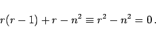 | (9.52b) |
Daraus folgt 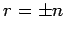. Einsetzen von
| 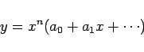 | (9.52c) |
in diese Gleichung liefert für den zu Null gesetzten Koeffizienten von xn+k die Bestimmungsgleichung
| 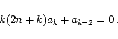 | (9.52d) |
Für k = 1 erhält man 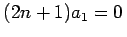. Für die Werte 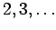 von k ergibt sich
| 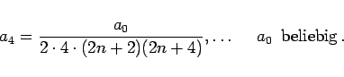 | (9.52e) |
Die für 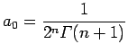 ( s. Gammafunktion) entstandene Reihe ist eine partikuläre Lösung der BESSELschen Differentialgleichung (9.52a) für ganzzahlige
s. Gammafunktion) entstandene Reihe ist eine partikuläre Lösung der BESSELschen Differentialgleichung (9.52a) für ganzzahlige  . Sie definiert die BESSEL- oder Zylinderfunktion n-ter Ordnung 1. Gattung
. Sie definiert die BESSEL- oder Zylinderfunktion n-ter Ordnung 1. Gattung
Die allgemeine Lösung der BESSELschen Differentialgleichung für nicht ganzzahlige n hat die Form
| 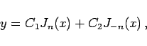 | (9.53b) |
wobei J-n(x) eine Reihe darstellt, die aus der Reihe für Jn(x) durch Ersetzen von n durch -n folgt. Für ganzzahliges n gilt 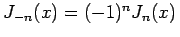. In der allgemeinen Lösung ist in diesem Falle J-n(x) durch die BESSELsche Funktion 2. Gattung
auch WEBERsche Funktion genannt, zu ersetzen. Zur Reihenentwicklung von Yn(x) s. z.B. Lit. 9.26. Die Kurvenbilder der Funktionen Y0 und Y1 zeigt die folgende Abbildung.
In manchen Anwendungen treten BESSEL-Funktionen mit einer rein imaginären Variablen auf. Dabei werden gewöhnlich die Produkte 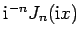 betrachtet, die mit In(x) bezeichnet werden:
Hierbei handelt es sich um Lösungen der Differentialgleichung
| 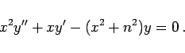 | (9.54b) |
Eine zweite Lösung dieser Differentialgleichung ist die MACDONALDsche Funktion
| 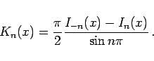 | (9.54c) |
Wenn n gegen eine ganze Zahl konvergiert, strebt dieser Ausdruck einem Grenzwert zu.
Die Funktionen In(x) und Kn(x) werden auch modifizierte BESSEL-Funktionen genannt.
Die Kurvenbilder der Funktionen I0 und I1 zeigt die folgende linke Abbildung, die der Funktionen K0 und K1 die rechte Abbildung.
Werte der Funktionen 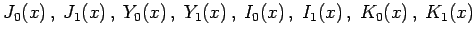 enthalten die Tabellen BESSELsche Funktionen (Zylinderfunktionen).
Die gleichen Formeln gelten auch für die WEBER-Funktionen Yn(x)
| 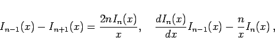 | (9.55b) |
| 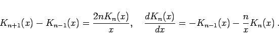 | (9.55c) |
Für ganzzahliges n gilt
| 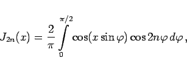 | (9.55d) |
| 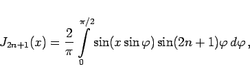 | (9.55e) |
oder, in komplexer Form,
Die Jn+1/2(x) können durch elementare Funktionen ausgedrückt werden. Insbesondere gilt
| 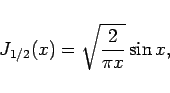 | (9.56a) |
| 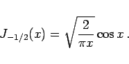 | (9.56b) |
Durch sukzessive Anwendung der Rekursionsformeln (9.55a) bis (9.55f) können die Ausdrücke für Jn+1/2(x) für beliebige ganzzahlige n aufgeschrieben werden. Für große Werte von x ergeben sich die folgenden asymptotischen Formeln:
| 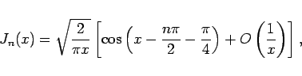 | (9.57a) |
| 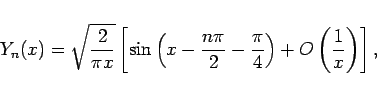 | (9.57c) |
| 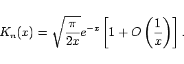 | (9.57d) |
Der Ausdruck 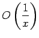 (s. LANDAU-Symbole) bedeutet eine infinitesimale Größe der gleichen Ordnung wie  .
.
Weitere Angaben über BESSEL-Funktionen s. Lit. 21.1.